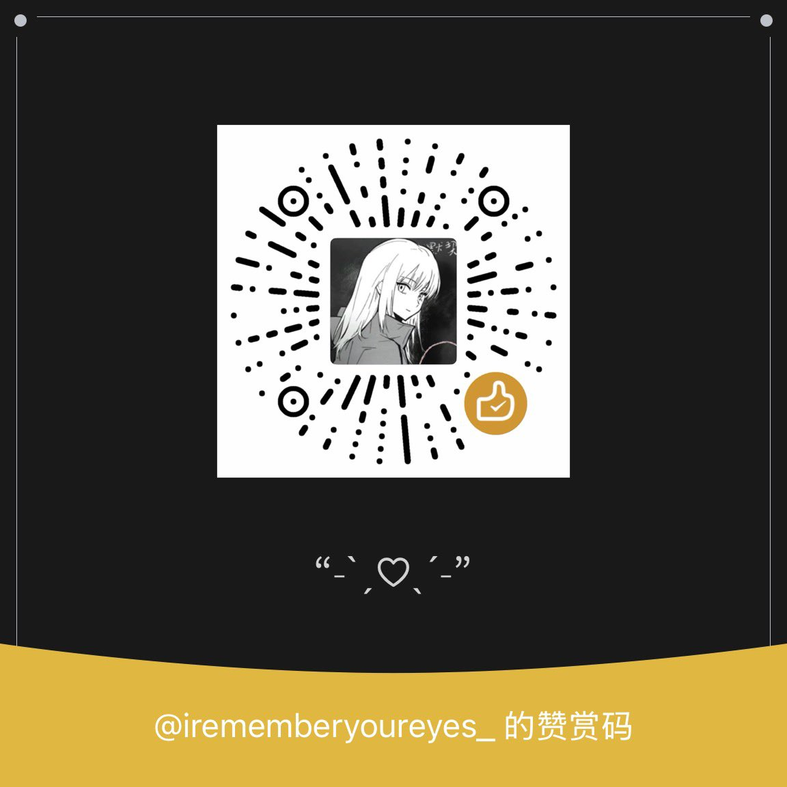

ENTROPY💊
@Entropy149868
RT @oTATomm: —-置顶🔝——————-
我是绵绵（已经数不清是第几次重生
求互关互转呀 你们可以找我交朋友(｡ì _ í｡)
🚪288/520/1314 门没有任何意义 你欣赏我心疼我都可以给我打钱 我会发出来感谢🥹💞
就这样以后想到什么再改 https://t.c…

w!gu
@oTATomm
—-置顶🔝——————-
我是绵绵（已经数不清是第几次重生
求互关互转呀 你们可以找我交朋友(｡ì _ í｡)
🚪288/520/1314 门没有任何意义 你欣赏我心疼我都可以给我打钱 我会发出来感谢🥹💞
就这样以后想到什么再改 https://t.co/1SWm4uAZqA